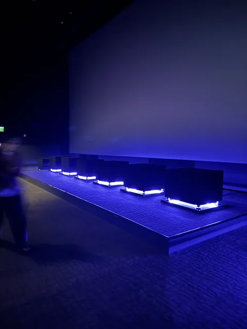

ROOK실행력
가로 · 세로 방향으로 원하는 만큼 이동



실행력
낯선 문제일수록 직접 부딪힙니다.
화면 밖 현장까지 확인합니다.


현장 조사
책상 위 조사에서 멈추지 않고, 필드 리서치와 인터뷰를 위해 롯데시네마 잠실점을 직접 찾았습니다.
직접 경험
특별관을 이해하려고 광음시네마에서 직접 영화를 관람했습니다. 사용자가 겪을 경험을 먼저 겪어 봤습니다.
사용자 인터뷰
앱으로 예매한 관람객 다섯 분을 만나 인터뷰했습니다. 세운 가설을 실제 사용자의 말로 확인했습니다.
현장 확인
영화관이 특별관과 관람 경험을 얼마나 알리고 있는지, 현장 홍보물로 확인했습니다.
2026.09.12 롯데시네마 필드리서치 및 현장 인터뷰